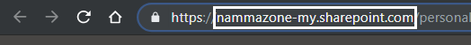
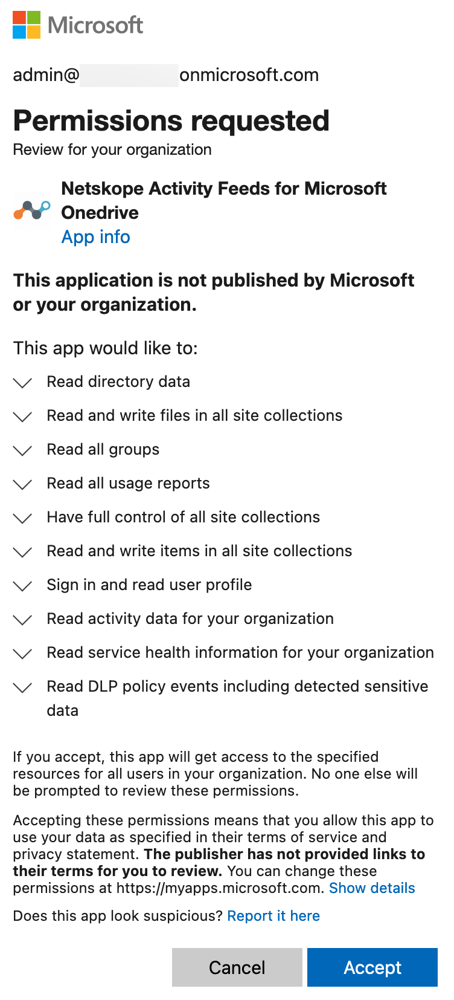

Configure Netskope to Access your Office 365 OneDrive App
In the previous section, the Netskope API-enabled Protection app was installed in your Office 365 environment. This final part of the installation instruction describes how to integrate your Microsoft Office 365 OneDrive app instance.
To authorize Netskope to access your Microsoft Office 365 OneDrive account:
Log in to the Netskope tenant UI:
https://<tenant hostname>.goskope.comand go to Settings > API-enabled Protection > SaaS.Select the Microsoft Office 365 OneDrive for Business icon, and then click Setup Instance.
The Setup Instances window opens. Enter the following details:
For instance name, enter the fully qualified domain name (FQDN) of your Microsoft Office 365 account. For example, if you use https://domain-my.sharepoint.com to login, then specify domain-my.sharepoint.com as the FQDN in the app instance field.
Note
To find the FQDN of your Microsoft Office 365 account, log in to your Microsoft Office 365 account and then:
Click the launch icon.
Click the OneDrive app.
Copy the FQDN text (remove the "https://" and the path after the FQDN text “/“)

If your organization supports Microsoft Office 365 multi-geo, enable the multi-geo check box. To check if you organization supports Microsoft Office 365 multi-geo, see Microsoft Office 365 Multi-Geo Support.
Important
If the Microsoft Office 365 account is multi-geo and you fail to enable the multi-geo check box and do not install the v2 apps in the central and satellite locations, you may run into inaccurate file and user listing.
Important
If you enable multi-geo, enter the FQDN of any one of the geo locations of the Microsoft Office 365 multi-geo account in the Instance Name field in the above step. On enabling multi-geo, Netskope monitors the central and satellite locations of your Microsoft Office 365 account.
If you intend to monitor a single location, you should uncheck the multi-geo checkbox, and enter the FQDN of the central location or satellite location in the Instance Name field in the above step. However, only the single instance of the entered FQDN will be monitored.
For instance type, select the appropriate features from the following options:
API-enabled Protection: Select this option to allow Netskope to scan through your SaaS app instance to list files, user, and other enterprise data.
Quarantine: Select this options to quarantine a file if a user uploads a document that has a DLP violation. This moves the file to a quarantine folder for you to review and take appropriate action (allow the file to be uploaded or block the file from being uploaded). For more information to set up quarantine, see Quarantine Profile.
Legal Hold: Select this option if you would like to preserves all forms of relevant information when litigation is reasonably anticipated. You can choose to have a copy of the file saved for legal purpose if it matches policy criteria. For more information to set up legal hold, see Legal Hold Profile.
Malware: Select this option to detect malware in files, emails, attachments, chat messages, posts etc. For more information to set up malware, see Configure Threat Protection for API-enabled Protection.
Forensic: Select this option to apply a forensic profile that flags policy violations and then stores the file in a forensic folder. For more information to set up forensic, see About Forensics.
Enter your Office 365 global administrator email address.
Note
Netskope recommends creating a temporary global administrator account for this purpose. To do so, log in to your Microsoft Office 365 admin center and create a user with global administrator role. Later, you can either delete or downgrade this account to a non-global administrator account.
If the service account is expiring or there is a change in the admin role email address, you can edit this email address after setting up the app instance.
Enter a list of internal domains. Important points to note:
Note
Verified domains (in Office 365 tenant, their statuses are displayed as “healthy” and “possible service issues”) provisioned in the Office 365 tenant need not be added to the internal domain list. These domains will be automatically treated as internal by API-enabled Protection. However, following domains can be added during the grant time if they need to be treated as internal by API-enabled Protection:
domains that are unverified (status displayed as “incomplete setup”) in the Office 365 tenant.
domains that are not provisioned in the Office 365 tenant.
A sample example of Office 365 domains is as follows:
Log in to your Microsoft Office 365 Admin Center, then navigate to Settings > Domains.

Ensure that you add the internal domains at grant time. Adding internal domains post-grant will require a re-grant, and will not mark the existing external users as internal even if the users are part of the internal domain.
For internal domains, wildcard DNS entries are not allowed.
Click Save, then click Grant Access for the app instance you just created.
After clicking Grant Access, you will be prompted to log in with your global administrator username and password, and then Accept the permissions and click Close.
 The Netskope Activity Feeds for Microsoft OneDrive enterprise app is installed in Azure AD with additional permissions once you grant the Microsoft Office 365 OneDrive for Business app. Going forward, the Microsoft Office 365 OneDrive for Business app instance will utilize the new Graph and Office 365 Management APIs from Microsoft.
Note
If you are setting up an app instance for the first time on a new Microsoft Office 365 account, the grant may fail. Microsoft has recently disabled apps using an Azure Access Control (ACS) app-only access token by default. If so, follow the steps located here to grant access successfully.
Note
The Enable Audit button is not available for Microsoft Office 365 OneDrive for Business app. You can enable audit logs by clicking the Grant Access button. Granting access enables audit logs for Microsoft Office 365 OneDrive for Business.
Refresh your browser, and you should see a green check icon next to the instance name.
Important
After granting access, make sure you log in to https://login.microsoftonline.com/ from a browser at least once with the email address you added in step 3d. This step is mandatory so that Netskope can make successful API calls with the Microsoft Office 365 account.
Next, you can downgrade the global administrator account.